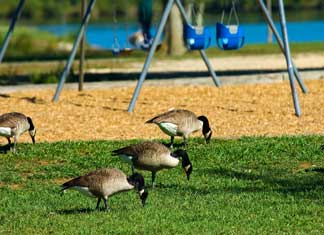

With summer on the horizon, a park is once again a perfect place to savor the outdoors with your family. Unfortunately, the park you and your family enjoy might be maintained with pesticides: chemicals used to prevent or kill insects, weeds and microorganisms that also pose risks to our health and the health of eco-systems.
Research links common pesticides to a range of health problems, from several types of cancer to an overall weakening of the immune system. Children are especially sensitive to pesticides, and the chemicals are also harmful to pets. Many parks are blanketed with the substances, yet most don't have signs to notify park-goers after a pesticide has been sprayed.
The use of such chemicals is not only dangerous, but unnecessary. There are a variety of alternatives for managing pests that are safer and effective, and some are even less expensive. Beyond Pesticides provides alternatives fact sheets for least toxic control of home and garden pests, as well as how to information and a directory of companies that offer alternatives for creating a healthier environment in your backyard or local park.
Some cities have campaigns underway to reduce or eliminate pesticide use in their parks. Check online to see if your area does and, if so, voice your support. Otherwise, follow these steps to help make your park pesticide-free.
You also can commission your city government to pass an ordinance making pesticide-free park maintenance official policy, though a consenting parks department should be enough to get the project underway.
An agreement to make a park pesticide-free is only the beginning. Implementing the plan takes many committed volunteers, so try making mulching and weed pulling community events as have residents of Bozeman, Mont. If your parks department decides to try nontoxic pesticide alternatives instead, offer information and resources on the different methods.
Once you're enjoying a pesticide-free park, ask your parks department to post a sign announcing that the space is pesticide-free. A sign is available here for $10, and you can also order one to display in your own organic garden or yard. The bright marker can encourage your neighbors to use pesticide-free methods in caring for their own lawns.
It can be done! Get inspired and get pointers on advocating for pesticide-free parks by reading about successful campaigns in Lawrence, Kan., Portland, Ore., and Seattle. Many cities start small by testing pesticide-free maintenance in just one or a few parks.
|
 ISTOCKPHOTO A pesticide-free park is a healthier environment for children, pets and wildlife. |
|
|